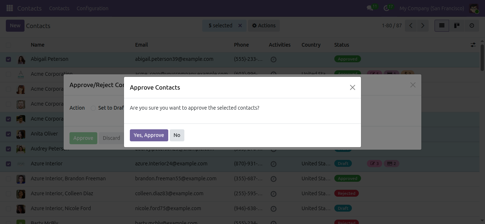
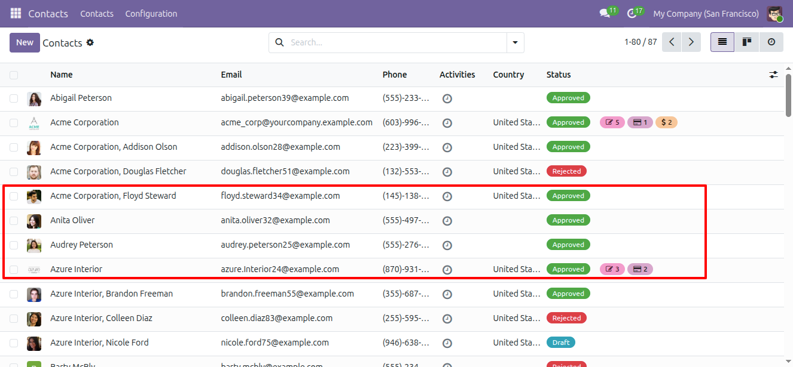

6.Approve and Reject contacts in bulk
Contact Managers can update the status of multiple contacts at once from the contact list or kanban view. Select the contacts, choose Approve/Reject Contacts from the Actions menu, then select Set to Draft, Approve or Reject in the dialog.
How It Works
All selected contacts: Every selected contact is
moved to the chosen status, whatever its current status. Contacts
already in that status remain unchanged.
Confirmation before update: A confirmation
message is displayed before the status is changed.
Contact Manager only: The action is visible only
to users with the Contact Manager access right.
Result: A notification shows the number of
updated contacts and the list is refreshed automatically.

Selected Contacts and Action

Select Status and Confirm

Bulk Status Update Result